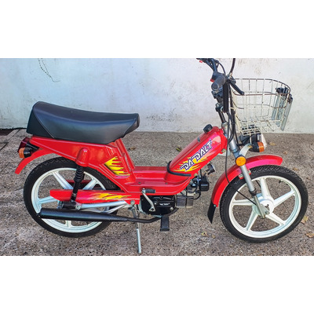
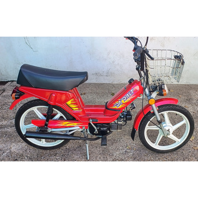

Ciclomotores Modificados: El Arte de Personalizar Sobre Ruedas
En Argentina, la cultura de los ciclomotores modificados ha crecido enormemente en los últimos años. Los entusiastas de las dos ruedas no solo buscan vehículos funcionales, sino que también quieren expresar su estilo único a través de modificaciones personalizadas. Desde motores tuneados hasta cambios en la estética, los ciclomotores modificados se han convertido en una forma de arte en movimiento, donde cada detalle cuenta. Si eres un apasionado de las motos modificadas, aquí encontrarás todo lo que necesitas para transformar tu ciclomotor en una obra maestra sobre ruedas.
 

Historia del Ciclomotor en Argentina
Los ciclomotores han sido una parte fundamental de la movilidad urbana en Argentina desde sus inicios. Con marcas emblemáticas como Zanella, Garelli y Juki, el ciclomotor ha pasado de ser un vehículo utilitario a un símbolo de personalización y pasión por las dos ruedas. A lo largo de los años, los ciclomotores se han transformado, y hoy en día la cultura de la modificación es más fuerte que nunca.
Reparaciones, Mantenimiento y Preparación
Si estás buscando mejorar el rendimiento de tu ciclomotor o asegurarte de que funcione perfectamente, no te pierdas nuestra nueva sección sobre Reparaciones y Mantenimiento. Aquí encontrarás los mejores consejos, piezas recomendadas y guías de preparación para mantener tu ciclomotor en su mejor forma.
Testimonios de Nuestros Miembros
"Transformé mi ciclomotor con las piezas recomendadas del club. ¡Ahora tengo más potencia y una estética que me encanta!"
"Gracias a los consejos sobre mantenimiento, mi ciclomotor nunca había estado en mejor forma. ¡Es un placer conducirlo!"